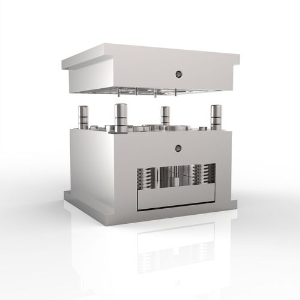

ABS、PC、PA如何选择？注塑件材料选型的五个关键维度
材料不只决定外观和成本，也直接影响尺寸稳定、耐温和产品寿命。选型前应同时核对使用环境、结构负载、阻燃需求、表面工艺和批量成本。
咨询材料方案 →新闻资讯
围绕材料选择、模具开发、工艺优化和质量稳定，分享精密注塑一线经验。

材料不只决定外观和成本，也直接影响尺寸稳定、耐温和产品寿命。选型前应同时核对使用环境、结构负载、阻燃需求、表面工艺和批量成本。
咨询材料方案 →最新文章
浇口位置、壁厚变化、冷却平衡和保压曲线共同决定产品变形趋势。
减少人工搬运和节拍波动，是提高大批量订单稳定性的关键一步。
稳定质量来自持续记录、快速反馈和可追溯的工艺参数。
完整的装配关系、关键尺寸和测试标准，能够显著减少试模修改。
